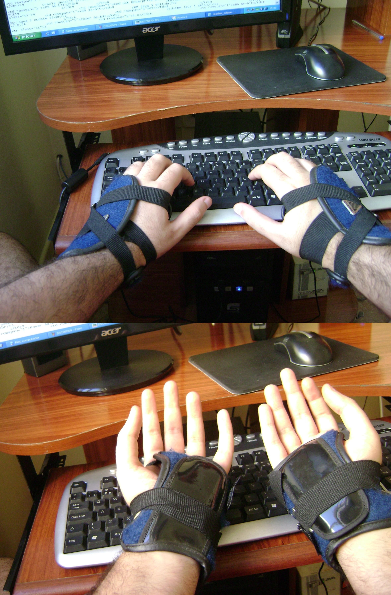

Troubles Musculosquelettiques

- Ensemble de pathologies des tissus mous (muscles, tendons, nerfs)
- Gestes répétitifs et inconfortables
- Maladie professionnelle la plus courante dans les pays développés
- Tendinite, Syndrome du canal carpien
- Opération chirurgicale
- ~120 jours d'arrêt
- 200 000 syndromes / an, 130 000 opérés (France)
- Il vaut mieux prévenir que guérir, non ?
Premier prototype ABCD (1868)
3 5 7 9 N O P Q R S T U V W X Y Z
2 4 6 8 . A B C D E F G H I J K L M
2 4 6 8 . A B C D E F G H I J K L M
Chevauchement lors de la frappe
- Mécanique : Composée d'engrenages, de leviers, d'articulations
- Collisions des marteaux ⇒ Dommages sur la machine
- Placement des touches revu pour éviter les collisions
- Éloignement des digraphes
- ⇒ répartition quasi-aléatoire des caractères
- ⇒ vitesse de frappe considérablement réduite, anti-efficace
Naissance du QWE.TY (1873)
Commercialisation (1874)
- Remington (armement) commercialise la Remington N°1 en QWERTY (et autres variantes)
- Remington N°2 commercialisée en 1878
- Mécanisme à base de ressorts, moins de problèmes de collisions
- La disposition, anti-efficace, est conservée …
August Dvorak, Professeur en Psychologie (1930)
Dvorak propose une disposition clavier, basée sur la logique, des études, des statistiques et la psychologieDisposition Dvorak

Heatmap

Caractères de la langue française (**œ æ Œ Æ « »**), caractères de programmation côte-à-côte, majuscules accentuées (**Ï À È**), espace insécable, tirets, exposants et indices (**x² d₂**), signes mathématiques, macrons, grec (**α β δ**), monnaies (**€ £ ฿**), etc.